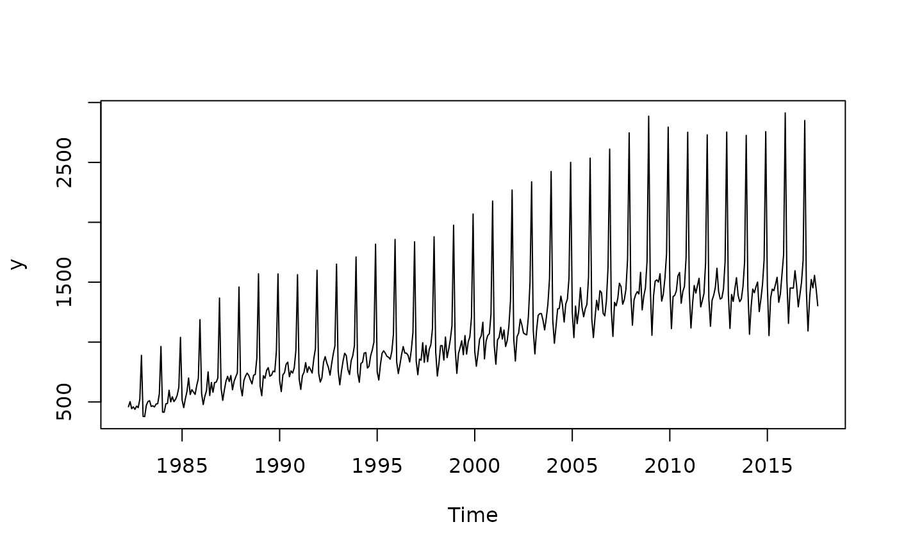

Function to perform a range-mean regression, trimmed to avoid outlier distortion. The slope is used in TRAMO to select whether the original series will be transformed into log or maintain in level.
Arguments
- data
data to test.
- period
periodicity of the data.
- groupsize
number of observations per group (before being trimmed). The default group size (
groupsize = 0) is computed as followed:if
period = 12orperiod = 6, it is equal to12;if
period = 4it is equal to12if the data has at least 166 observations,8otherwise;if
period = 3orperiod = 2it is equal to12if the data has at least 166 observations,6otherwise;if
period = 1it is equal to9if the data has at least 166 observations,5otherwise;it is equal to
periodotherwise.
- trim
number of trimmed observations.
Details
First, the data is divided into \(n\) groups of successive observations of length \(l\) (groupsize).
That is, the first group is formed with the first \(l\) observations,
the second group is formed with observations \(1+l\) to \(2l\), etc.
Then, for each group \(i\), the observations are sorted and the trim smallest and largest
observations are rejected (to avoid outlier distortion).
With the other observations, the range (noted \(y_i\)) and mean (noted \(m_i\)) are computed.
Finally, the following regression is performed :
$$
y_t = \alpha + \beta m_t + u_t.
$$
The function rangemean_tstat returns the T-statistic associated to \(\beta\).
If it is significantly higher than 0, log transformation is recommended.
Examples
y = ABS$X0.2.09.10.M
# Multiplicative pattern
plot(y)

period = 12
rm_t = rangemean_tstat(y, period = period, groupsize = period)
rm_t # higher than 0
#> [1] 32.41607
# Can be tested:
pt(rm_t, period - 2, lower.tail = FALSE)
#> [1] 9.196296e-12
# Or :
1-cdf_t(period-2, rm_t)
#> [1] 9.19631e-12
# Close to 0
rm_t_log = rangemean_tstat(log(y), period = period, groupsize = period)
rm_t_log
#> [1] 0.5946804
pt(rm_t_log, period - 2, lower.tail = FALSE)
#> [1] 0.2826345